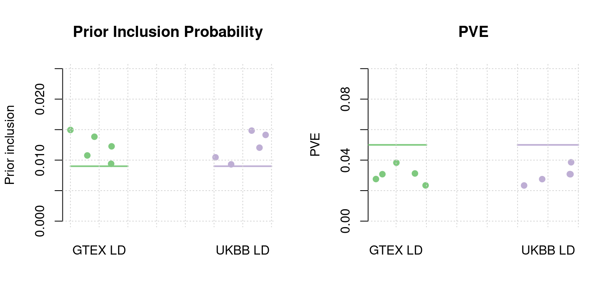
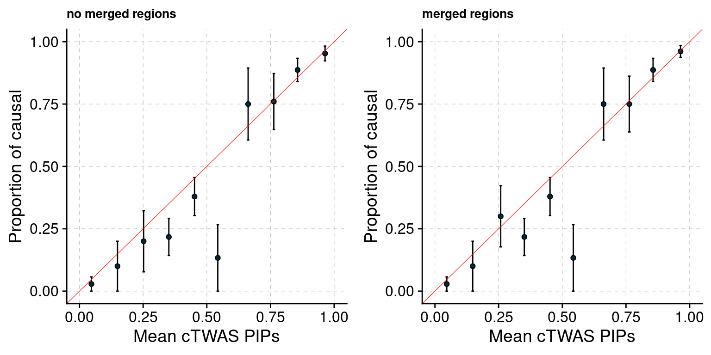
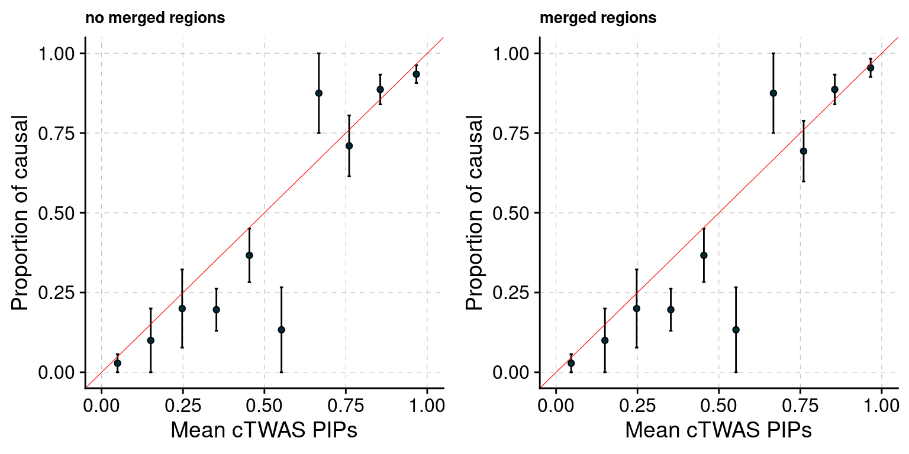
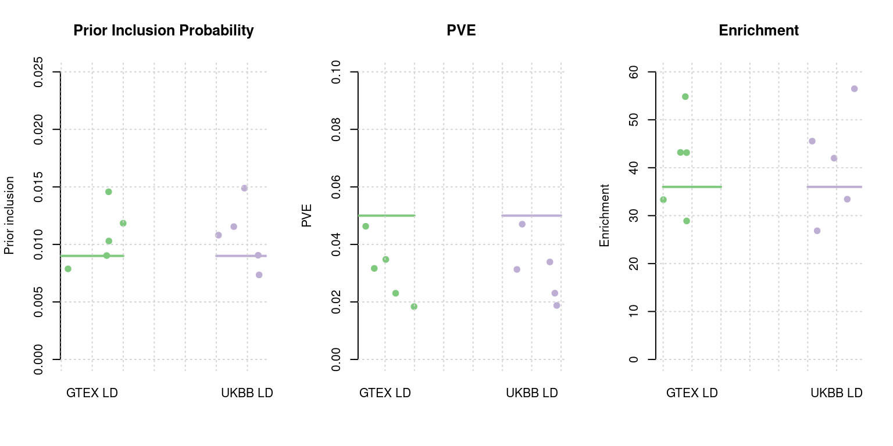
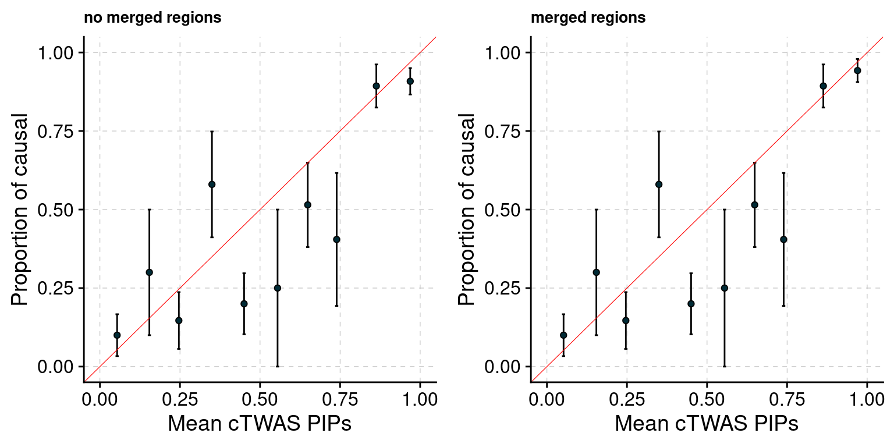
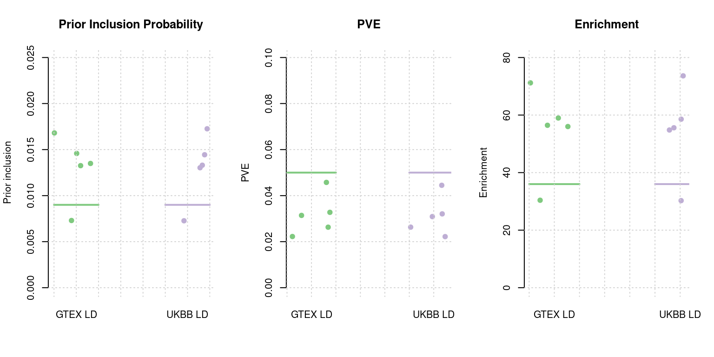
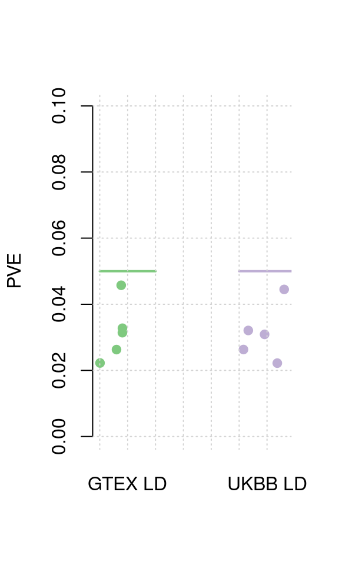
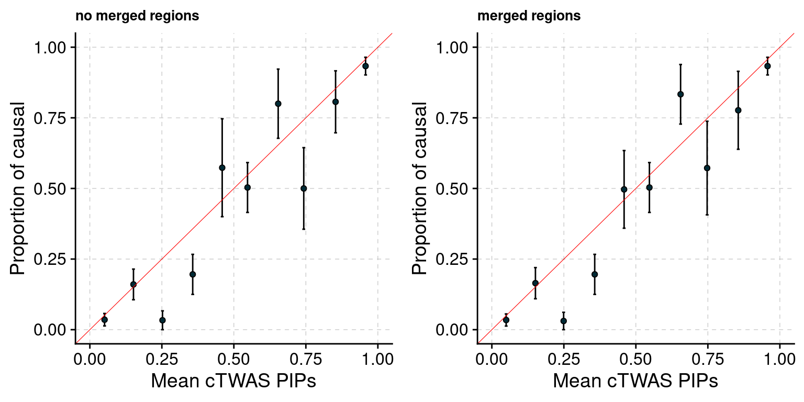

Single weight simulation
shengqian
2024-5-6
Last updated: 2024-05-06
Checks: 6 1
Knit directory: multigroup_ctwas_analysis/
This reproducible R Markdown analysis was created with workflowr (version 1.7.0). The Checks tab describes the reproducibility checks that were applied when the results were created. The Past versions tab lists the development history.
The R Markdown is untracked by Git. To know which version of the R Markdown file created these results, you’ll want to first commit it to the Git repo. If you’re still working on the analysis, you can ignore this warning. When you’re finished, you can run wflow_publish to commit the R Markdown file and build the HTML.
Great job! The global environment was empty. Objects defined in the global environment can affect the analysis in your R Markdown file in unknown ways. For reproduciblity it’s best to always run the code in an empty environment.
The command set.seed(20231112) was run prior to running the code in the R Markdown file. Setting a seed ensures that any results that rely on randomness, e.g. subsampling or permutations, are reproducible.
Great job! Recording the operating system, R version, and package versions is critical for reproducibility.
Nice! There were no cached chunks for this analysis, so you can be confident that you successfully produced the results during this run.
Great job! Using relative paths to the files within your workflowr project makes it easier to run your code on other machines.
Great! You are using Git for version control. Tracking code development and connecting the code version to the results is critical for reproducibility.
The results in this page were generated with repository version 15ab024. See the Past versions tab to see a history of the changes made to the R Markdown and HTML files.
Note that you need to be careful to ensure that all relevant files for the analysis have been committed to Git prior to generating the results (you can use wflow_publish or wflow_git_commit). workflowr only checks the R Markdown file, but you know if there are other scripts or data files that it depends on. Below is the status of the Git repository when the results were generated:
Untracked files:
Untracked: analysis/single_weight_simulations.Rmd
Unstaged changes:
Modified: analysis/index.Rmd
Note that any generated files, e.g. HTML, png, CSS, etc., are not included in this status report because it is ok for generated content to have uncommitted changes.
There are no past versions. Publish this analysis with wflow_publish() to start tracking its development.
This single weight simulation study is conducted to evaluate our new cTWAS software performance (parameter estimation, PIP calibration …). Three expression weights from PredictDB are used in this study, which are Liver, Adipose and Lung. For each weight, I select causal genes, simulate phenotype/GWAS and perform ctwas analysis. Two types of LD between weight SNPs (calculating gene z score) are used and compared in this study. And their performance are very close because most genes only have one weight SNP.
Warning: replacing previous import 'utils::download.file' by
'restfulr::download.file' when loading 'rtracklayer'
Attaching package: 'cowplot'The following object is masked from 'package:ggpubr':
get_legend
Attaching package: 'plyr'The following object is masked from 'package:ggpubr':
mutate
Attaching package: 'dplyr'The following objects are masked from 'package:plyr':
arrange, count, desc, failwith, id, mutate, rename, summarise,
summarizeThe following objects are masked from 'package:stats':
filter, lagThe following objects are masked from 'package:base':
intersect, setdiff, setequal, unionSimulation 1: Expression trait in liver with 3% PVE and 0.9% Prior
Number of causal genes detected (GTEX LD)
simutag ctwas_genes ctwas_cgenes twas_genes twas_cgenes total_cgenes
1 1-1 20 19 57 24 73
2 1-2 15 13 58 22 67
3 1-3 21 20 55 23 74
4 1-4 29 25 68 30 76
5 1-5 16 15 45 21 64Number of causal genes detected (UKBB LD)
simutag ctwas_genes ctwas_cgenes twas_genes twas_cgenes total_cgenes
1 1-1 20 19 57 24 73
2 1-2 16 14 59 23 67
3 1-3 22 20 56 23 74
4 1-4 30 26 69 30 76
5 1-5 16 15 45 21 64Estimated Prior Inclusion Probability

Estimated PVE

PIP Calibration Plot based on UKBB LD (filter out cs index 0)

Simulation 2: Expression trait in adipose with 3% PVE and 0.9% Prior
Number of causal genes detected (GTEX LD)
simutag ctwas_genes ctwas_cgenes twas_genes twas_cgenes total_cgenes
1 1-1 11 11 70 25 90
2 1-2 14 14 54 21 75
3 1-3 25 19 93 27 91
4 1-4 19 17 62 21 92
5 1-5 15 13 56 19 86Number of causal genes detected (UKBB LD)
simutag ctwas_genes ctwas_cgenes twas_genes twas_cgenes total_cgenes
1 1-1 11 11 70 25 90
2 1-2 14 13 56 21 75
3 1-3 24 19 92 27 91
4 1-4 17 16 63 22 92
5 1-5 14 13 56 19 86Estimated Prior Inclusion Probability

Estimated PVE

PIP Calibration Plot based on UKBB LD (filter out cs index 0)

Simulation 3: Expression trait in lung with 3% PVE and 0.9% Prior
Number of causal genes detected (GTEX LD)
simutag ctwas_genes ctwas_cgenes twas_genes twas_cgenes total_cgenes
1 1-1 17 15 87 29 89
2 1-2 14 12 83 22 79
3 1-3 26 19 98 29 97
4 1-4 25 21 51 26 89
5 1-5 23 18 63 28 87Number of causal genes detected (UKBB LD)
simutag ctwas_genes ctwas_cgenes twas_genes twas_cgenes total_cgenes
1 1-1 17 16 88 29 89
2 1-2 15 13 85 22 79
3 1-3 25 19 97 29 97
4 1-4 23 21 52 26 89
5 1-5 21 18 63 28 87Estimated Prior Inclusion Probability

Estimated PVE

PIP Calibration Plot based on UKBB LD (filter out cs index 0)

sessionInfo()R version 4.2.0 (2022-04-22)
Platform: x86_64-pc-linux-gnu (64-bit)
Running under: CentOS Linux 7 (Core)
Matrix products: default
BLAS/LAPACK: /software/openblas-0.3.13-el7-x86_64/lib/libopenblas_haswellp-r0.3.13.so
locale:
[1] LC_CTYPE=en_US.UTF-8 LC_NUMERIC=C
[3] LC_TIME=en_US.UTF-8 LC_COLLATE=en_US.UTF-8
[5] LC_MONETARY=en_US.UTF-8 LC_MESSAGES=en_US.UTF-8
[7] LC_PAPER=en_US.UTF-8 LC_NAME=C
[9] LC_ADDRESS=C LC_TELEPHONE=C
[11] LC_MEASUREMENT=en_US.UTF-8 LC_IDENTIFICATION=C
attached base packages:
[1] stats graphics grDevices utils datasets methods base
other attached packages:
[1] dplyr_1.1.4 plyr_1.8.7 plotrix_3.8-2 cowplot_1.1.1
[5] ggpubr_0.6.0 ggplot2_3.4.4 ctwas_0.2.0.9003 workflowr_1.7.0
loaded via a namespace (and not attached):
[1] backports_1.4.1 BiocFileCache_2.4.0
[3] lazyeval_0.2.2 BiocParallel_1.30.3
[5] GenomeInfoDb_1.32.2 LDlinkR_1.4.0
[7] digest_0.6.29 foreach_1.5.2
[9] ensembldb_2.20.2 htmltools_0.5.3
[11] fansi_1.0.3 magrittr_2.0.3
[13] memoise_2.0.1 Biostrings_2.64.0
[15] matrixStats_0.62.0 locuszoomr_0.3.0
[17] prettyunits_1.1.1 colorspace_2.0-3
[19] blob_1.2.3 rappdirs_0.3.3
[21] ggrepel_0.9.4 xfun_0.32
[23] callr_3.7.2 crayon_1.5.1
[25] RCurl_1.98-1.7 jsonlite_1.8.8
[27] zoo_1.8-10 iterators_1.0.14
[29] glue_1.6.2 gtable_0.3.1
[31] zlibbioc_1.42.0 XVector_0.36.0
[33] DelayedArray_0.22.0 car_3.1-1
[35] BiocGenerics_0.42.0 abind_1.4-5
[37] scales_1.2.1 DBI_1.1.3
[39] rstatix_0.7.2 Rcpp_1.0.9
[41] viridisLite_0.4.1 progress_1.2.2
[43] bit_4.0.4 stats4_4.2.0
[45] htmlwidgets_1.5.4 httr_1.4.4
[47] ellipsis_0.3.2 farver_2.1.1
[49] pkgconfig_2.0.3 XML_3.99-0.14
[51] sass_0.4.2 dbplyr_2.5.0
[53] utf8_1.2.2 tidyselect_1.2.1
[55] labeling_0.4.2 rlang_1.1.1
[57] later_1.3.0 AnnotationDbi_1.58.0
[59] munsell_0.5.0 pgenlibr_0.3.2
[61] tools_4.2.0 cachem_1.0.6
[63] cli_3.6.1 generics_0.1.3
[65] RSQLite_2.2.14 broom_1.0.5
[67] evaluate_0.16 stringr_1.5.0
[69] fastmap_1.1.0 yaml_2.3.5
[71] processx_3.7.0 knitr_1.40
[73] bit64_4.0.5 fs_1.5.2
[75] purrr_1.0.2 KEGGREST_1.36.2
[77] AnnotationFilter_1.20.0 whisker_0.4
[79] xml2_1.3.3 biomaRt_2.52.0
[81] compiler_4.2.0 rstudioapi_0.14
[83] plotly_4.10.0 filelock_1.0.2
[85] curl_4.3.2 png_0.1-7
[87] ggsignif_0.6.3 tibble_3.2.1
[89] bslib_0.4.0 stringi_1.7.8
[91] highr_0.9 ps_1.7.1
[93] GenomicFeatures_1.48.3 lattice_0.20-45
[95] ProtGenerics_1.28.0 Matrix_1.5-3
[97] vctrs_0.6.4 pillar_1.9.0
[99] lifecycle_1.0.4 jquerylib_0.1.4
[101] data.table_1.14.2 bitops_1.0-7
[103] irlba_2.3.5 httpuv_1.6.5
[105] rtracklayer_1.56.0 GenomicRanges_1.48.0
[107] R6_2.5.1 BiocIO_1.6.0
[109] promises_1.2.0.1 gridExtra_2.3
[111] IRanges_2.30.0 codetools_0.2-18
[113] SummarizedExperiment_1.26.1 rprojroot_2.0.3
[115] rjson_0.2.21 withr_2.5.0
[117] GenomicAlignments_1.32.0 Rsamtools_2.12.0
[119] S4Vectors_0.34.0 GenomeInfoDbData_1.2.8
[121] parallel_4.2.0 hms_1.1.2
[123] grid_4.2.0 tidyr_1.3.1
[125] gggrid_0.2-0 rmarkdown_2.16
[127] MatrixGenerics_1.8.0 carData_3.0-5
[129] logging_0.10-108 git2r_0.30.1
[131] mixsqp_0.3-48 getPass_0.2-2
[133] Biobase_2.56.0 restfulr_0.0.14